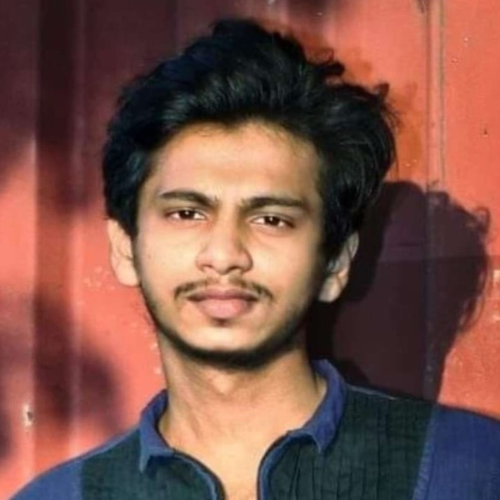

স্মৃতিচারণ:
ভাবতেই পারছি না, আমার সন্তানতুল্য ছাত্র, ইরফান, আর নেই ! ইন্নালিল্লাহি ওয়া ইন্না ইলাইহি রাজিউন। ইউআইইউ (UIU) পরিবার শোকে মুহ্যমান। কোটা সংস্কারের ন্যায্য দাবি আদায়ে তাকেও জীবন দিতে হলো! হে আল্লাহ, তুমি তাকে শহীদী মর্যাদা দেন করো।
Narrator: Farid Sobhani